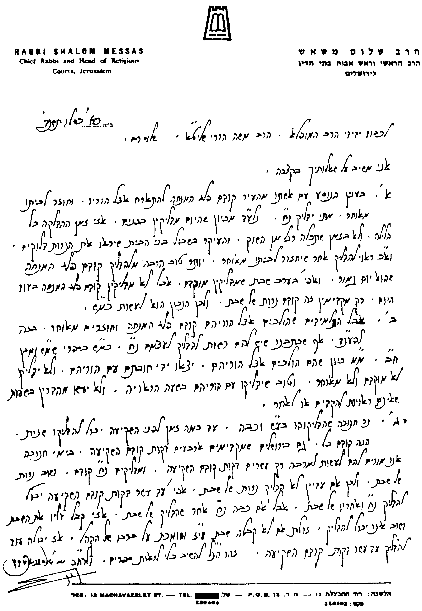

לכבוד הרב הגדול, מעוז ומגדול, סיני ועוקר הרים וטוחנן זב"ז,
הרה"ג רב שלום משאש שליט"א,
הרב הראשי וראש אבות בתי הדין פעיה"ק ירושת"ו.
א) אדם הנוסע עם אשתו קודם פלג המנחה מביתו להתארח אצל קרוביו, וחוזר לביתו מאוחר בלילה, היכן ידליק נרות חנוכה. וכן הדין לבחור ישיבה (שלדעת כת"ר שליט"א צריך להדליק בישיבה בברכה, ולא לסמוך על הוריו שמדליקים בביתם), אם נוסע לפני פלג המנחה לבקר את הוריו, וחוזר לישיבה מאוחר בלילה.
ב) נר חנוכה שהדליקוהו בעש"ק, וכבה טרם כניסת השבת, עד כמה זמן לפני השקיעה מותר להדליקו אם רוצים להדליקו שוב. והאם יש הבדל בין ירושלים לשאר חלקי הארץ (שבירושלים ת"ו מקדימים את כניסת השבת).
אודה לכת"ר שליט"א אם יטרח להשיבני במהרה על דברי, כיון שמעונין אני לפרסם דעתו, דעת עליון, ואין שמחה כהתרת הספקות, והמתירן שכמ"ה.
בברכת התורה מהררי ציון
משה הררי
ישיבת מרכז הרב
פעיה"ק ירושלים ת"ו

* ראה שו"ת שמש ומגן (ח"ג סי' נ"ו סק"ט) כמה שינויים בתשובה זו.